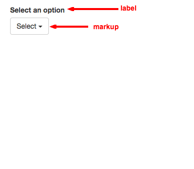
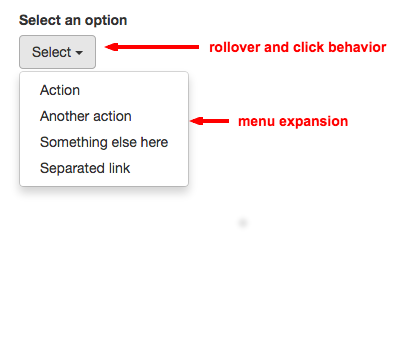
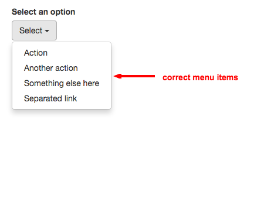
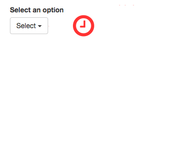

Presented by Mark Gable
Mark Gable
if a element rendered on the page
if the element behaves in the intended way
if the rendered data correct
if the response times are within acceptable limits
When the submit button is pressed
The Todos application should: